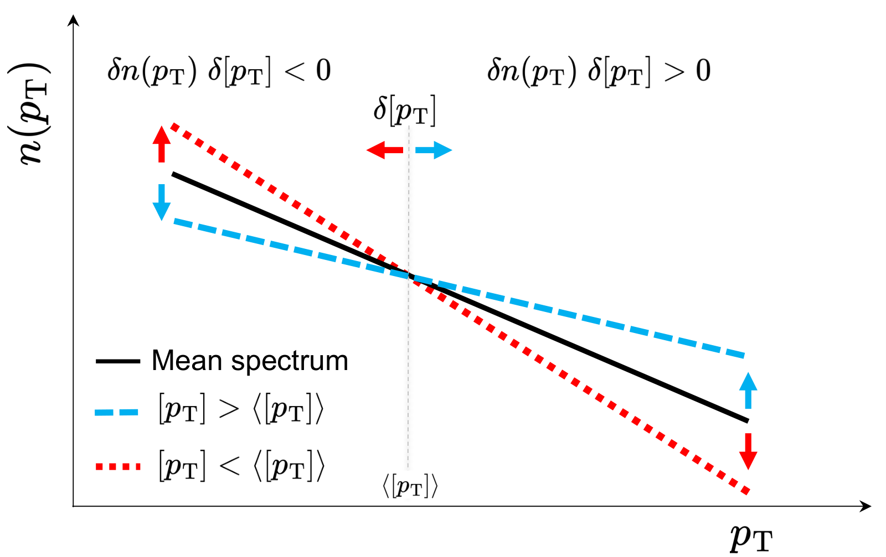
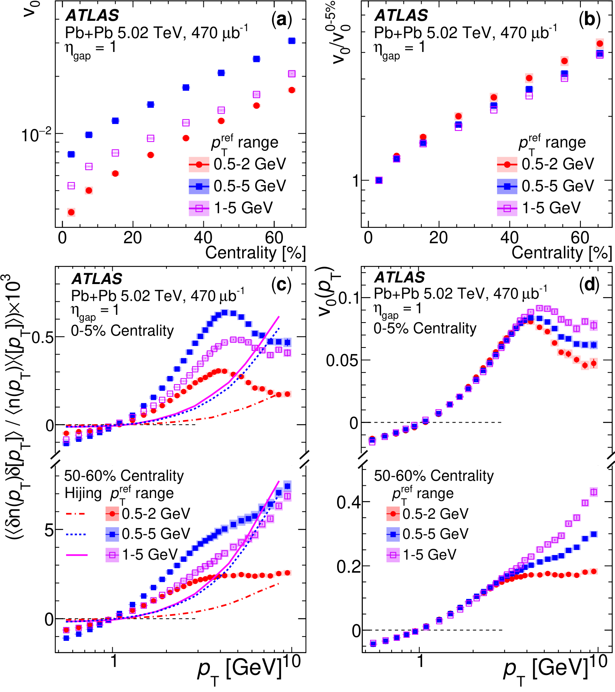
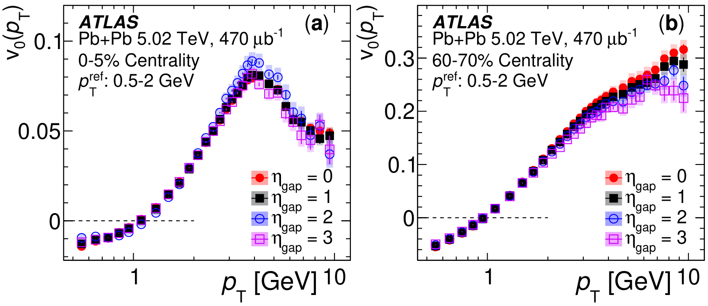
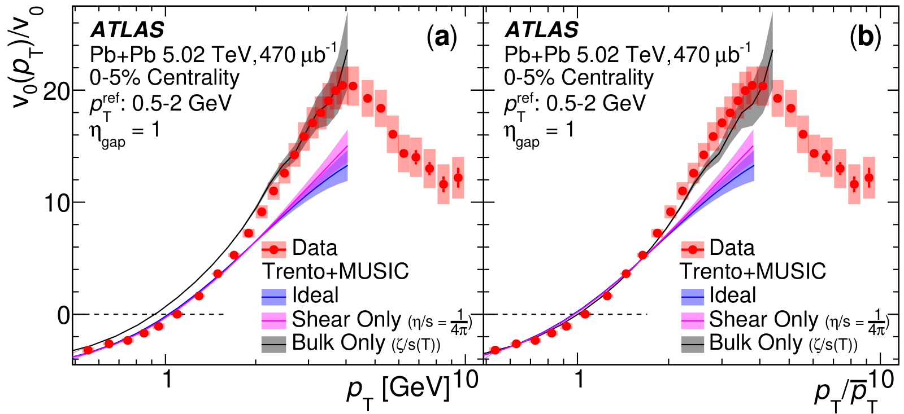

Is the quark-gluon plasma's radial explosion a collective motion?
Evidence for the collective nature of radial flow in Pb+Pb collisions with the ATLAS detector
ATLAS Collaboration, Phys. Rev. Lett. 136, 032301 (2026), Editors' Suggestion
My role: lead analyzer, author of the internal analysis note and of the paper.
In one paragraph
Lead-lead collisions at the LHC create a tiny droplet of quark-gluon plasma that explodes outward. That this radial explosion is a collective motion of the whole fluid was assumed but never tested. We made the first measurement of its event-by-event fluctuations at each particle momentum, v₀(pT). It passes all three tests of collectivity and is sensitive to the plasma's bulk viscosity.
1The gap: one kind of flow had never been tested
Pressure in the plasma droplet leaves two fingerprints on the emitted particles: anisotropic flow (vₙ), set by the droplet's shape, and radial flow (v₀), set by its size.
2What we measure: how the spectrum tilts, momentum by momentum
A stronger radial push flattens an event's momentum spectrum: fewer slow particles, more fast ones. A weaker push steepens it. The spectrum pivots near the average momentum.
We correlate the spectrum in one half of the ATLAS detector with the average momentum [pT] in the other half. Separating the halves suppresses short-range "non-flow" correlations from jets and decays.
3What we observe: three hallmarks of collectivity
Three properties establish that anisotropic flow is collective. We tested all three for radial flow.

Hallmark 1 · It factorizes
With three different reference ranges for [pT], the raw correlations differ, but v₀(pT) is the same below about 3 GeV. The two-particle correlation is a product of single-particle responses. v₀(pT) crosses zero near 1 GeV (≈ ⟨[pT]⟩) and satisfies the predicted sum rule within 4%.

Hallmark 2 · It is long-range
Widening the gap between the halves from 0 to 3 barely changes v₀(pT). The effect spans the whole event.

Hallmark 3 · Its shape is universal

4What we conclude: radial flow is collective, and it measures bulk viscosity
Radial flow is collective: it factorizes, is long-range and has a universal shape. A similar ALICE study reports consistent results.
v₀(pT) is especially sensitive to bulk viscosity, the plasma's resistance to uniform expansion and one of its least-constrained properties.

5What comes next
- Small systems: O+O, Ne+Ne, p+Pb and pp.
- Longitudinal structure: radial flow vs. rapidity, v₀(η).
- Jet quenching: v₀(pT) at high pT as a probe of energy-loss fluctuations.
- Rare probes: identified hadrons, heavy flavour and quarkonia.
- Bulk viscosity: tuned model fits including v₀(pT).
All plots on this page are reproduced from that paper under CC BY 4.0. Animations are simplified illustrations made for this page, not results of the paper.